ฟิสิกส์ • เล่ม 3 • บทที่ 10 แสงเชิงคลื่น
10.2 การแทรกสอดของแสงผ่านสลิตคู่
ดูภาพ สรุปความรู้ แล้วฝึกจากผลต่างทางเดินไปสู่ตำแหน่งแถบแสง
แต่ละคำถามมีพื้นที่ตอบของตัวเอง ใช้ภาพประกอบที่ให้ แล้วเปิดเฉลยเพื่อทบทวนขั้นตอน
0 รู้จักสลิตเดี่ยวและสลิตคู่
เริ่มจากรู้จักอุปกรณ์และอ่านระยะบนภาพ ก่อนดูว่าแสงที่ผ่านช่องไปแล้วให้ภาพอย่างไร
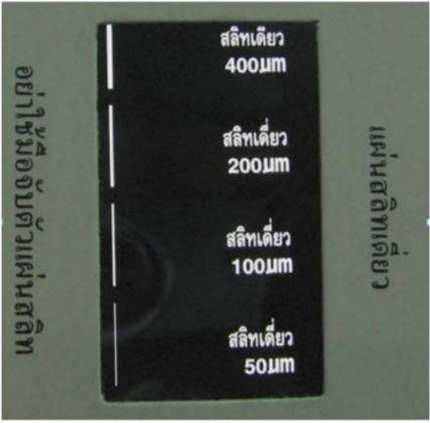
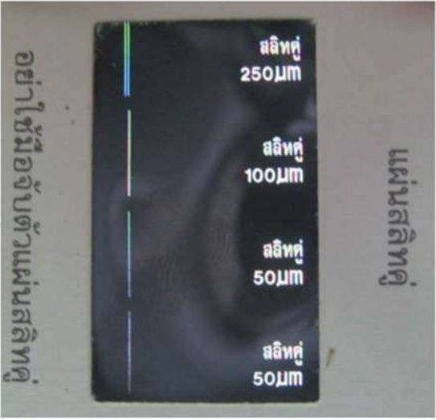
สลิตคืออะไร?
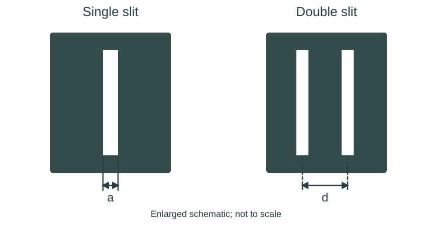
ความกว้างช่องกับระยะห่างสลิต
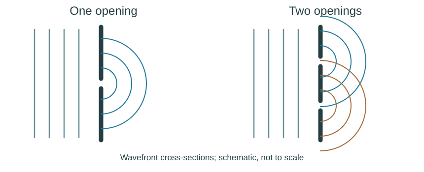
สลิตเกี่ยวกับสมบัติใดของแสง?
คำถาม 1
แผ่นหนึ่งมีช่องให้เลือกหลายช่อง จะพิจารณาว่าใช้สลิตเดี่ยวหรือสลิตคู่จากอะไร?
คำถาม 2
ในภาพ ระยะ \(a\) และ \(d\) วัดจากตำแหน่งใดถึงตำแหน่งใด?
คำถาม 3
หลังผ่านสลิตคู่ ต้องมีการแผ่ของแสงจากช่องก่อนอย่างไร จึงเกิดบริเวณที่คลื่นซ้อนทับกันได้?
1 ทดลองและอ่านภาพแถบแสง
พิจารณาภาพการจัดอุปกรณ์ เลเซอร์ฉายผ่านคู่ช่องที่เลือก แล้วแสงตกบนฉาก หลีกเลี่ยงการมองเข้าลำแสงโดยตรงและให้ครูควบคุมอุปกรณ์
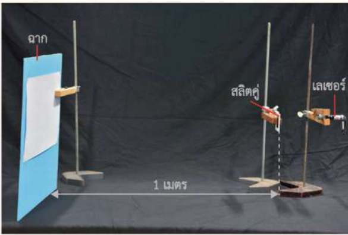
ใช้ระยะสลิตถึงฉากเท่าเดิม เปรียบเทียบแสงสีเขียวเมื่อเปลี่ยนระยะห่างสลิต จากนั้นคงระยะห่างสลิตแล้วเปรียบเทียบแสงสีเขียวกับสีแดง
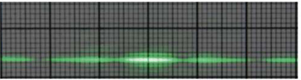
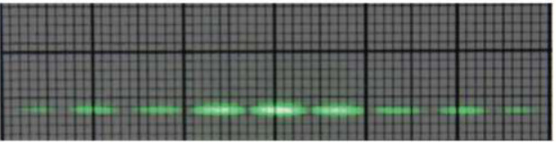
คำถาม 4
เปรียบเทียบ A กับ B: ตัวแปรใดเปลี่ยน ตัวแปรใดคงที่ และแถบเปลี่ยนอย่างไร?
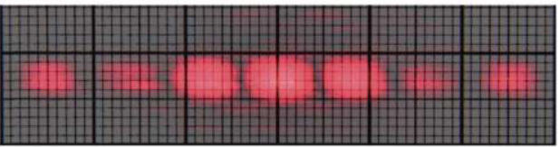
คำถาม 5
เปรียบเทียบ B กับ C: แสงสีใดให้แถบห่างกว่ากัน? ต้องคงอะไรจึงเปรียบเทียบสีแสงได้?
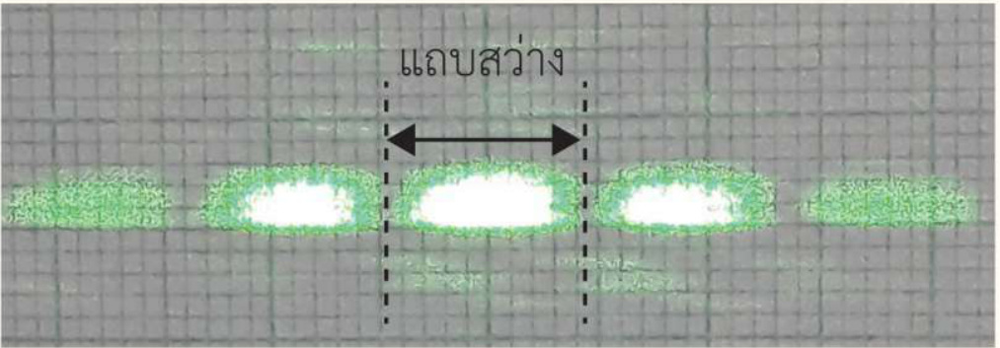
คำถาม 6
ความกว้างของแถบสว่างหนึ่งแถบควรวัดระหว่างจุดใด?
สรุปผลการทดลอง
ตรวจความเข้าใจ 10.2 · ข้อ 1
การทดลองการแทรกสอดของธอมัส ยัง เป็นหลักฐานสนับสนุนแนวคิดใดเกี่ยวกับแสง?
2 ผลต่างทางเดิน เฟส และแถบสว่าง–มืด
แหล่งกำเนิดอาพันธ์และเงื่อนไขที่ใช้
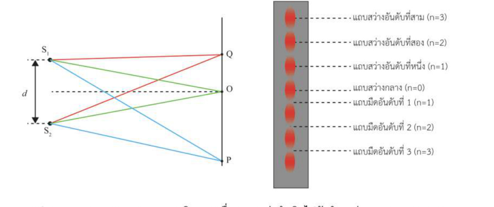
ผลต่างทางเดินของแสง
คำถาม 7
ที่จุด P ระยะสองเส้นเท่ากับ \(12\lambda\) และ \(10\lambda\) ผลต่างทางเดินเป็นเท่าใด?
ผลต่างทางเดินเชื่อมกับเฟส
เมื่อคลื่นเดินทางครบ 1 ความยาวคลื่น \(\lambda\) เฟสเปลี่ยนไป 1 รอบ หรือ \(2\pi\) rad
ดังนั้น ผลต่างทางเดิน \(\Delta r\) คิดเป็นจำนวนรอบเท่ากับ \(\dfrac{\Delta r}{\lambda}\)
\[\frac{\Delta\phi}{2\pi}=\frac{\Delta r}{\lambda}\quad\Rightarrow\quad\boxed{\Delta\phi=\frac{2\pi\Delta r}{\lambda}}\]สูตรนี้ให้ความต่างเฟสจากผลต่างทางเดิน สำหรับสลิตที่มีเฟสเริ่มต้นตรงกัน จึงใช้เป็นความต่างเฟสที่จุดสังเกตได้
ถ้า \(\Delta r=m\lambda\) จะได้ \(\Delta\phi=2m\pi\) rad เมื่อ \(m\) เป็นจำนวนเต็ม คลื่นจึงกลับมาเฟสตรงกัน
ตัวอย่าง 1
แหล่งกำเนิดอาพันธ์สองแหล่งเริ่มเฟสตรงกัน ให้แสงความยาวคลื่น 600 nm หาความต่างเฟสที่จุด P สำหรับแต่ละกรณี
ตัวอย่าง 1 · ก
ก. \(S_1P=65.00\) cm และ \(S_2P=65.60\) cm
ตัวอย่าง 1 · ข
ข. \(S_1P=120\lambda\) และ \(S_2P=125.5\lambda\)
ตรวจความเข้าใจ 10.2 · ข้อ 2
กำหนด \(S_1P=125\lambda\) และ \(S_2P=120\lambda\) ความต่างเฟสที่ P เป็นเท่าใด?
เงื่อนไขเกิดแถบสว่างและแถบมืด
แถบสว่าง: \(\Delta r=n\lambda\), โดย n = 0, 1, 2, … คลื่นมาถึงเฟสตรงกันและเสริมกัน
แถบมืด: \(\Delta r=(n-\tfrac12)\lambda\), โดย n = 1, 2, 3, … คลื่นมาถึงเฟสตรงข้ามและหักล้างกัน สมมติแอมพลิจูดเท่ากันเพื่อให้มืดสนิท
นับอันดับแถบอย่างไร?
คำถาม 8
จุดที่ห่างจากสองสลิตเท่ากันอยู่บนแถบชนิดใด อันดับเท่าใด?
คำถาม 9
ถ้า \(\Delta r=1.5\lambda\) เป็นแถบใด อันดับเท่าใด?
คำถาม 10
ถ้า \(\Delta r=1.2\lambda\) จะเป็นตำแหน่งสว่างสุดหรือมืดสนิทพอดีหรือไม่?
ตัวอย่าง 2
แสงจากสองแหล่งอาพันธ์เริ่มเฟสตรงกัน มีความยาวคลื่น 550 nm ระบุชนิดและอันดับแถบจากผลต่างทางเดิน
ตัวอย่าง 2 · ก
ก. ผลต่างทางเดิน 1100 nm
ตัวอย่าง 2 · ข
ข. ผลต่างทางเดิน 825 nm
ตรวจความเข้าใจ 10.2 · ข้อ 4
AB เป็นสลิตคู่ แสงตกกระทบตั้งฉาก ถ้า \(AC=n\lambda\) และ \(BC=(n+3)\lambda\) เมื่อ n เป็นจำนวนเต็ม ให้ OM เป็นแนวกลาง ที่ C เป็นแถบใด อันดับเท่าใด?
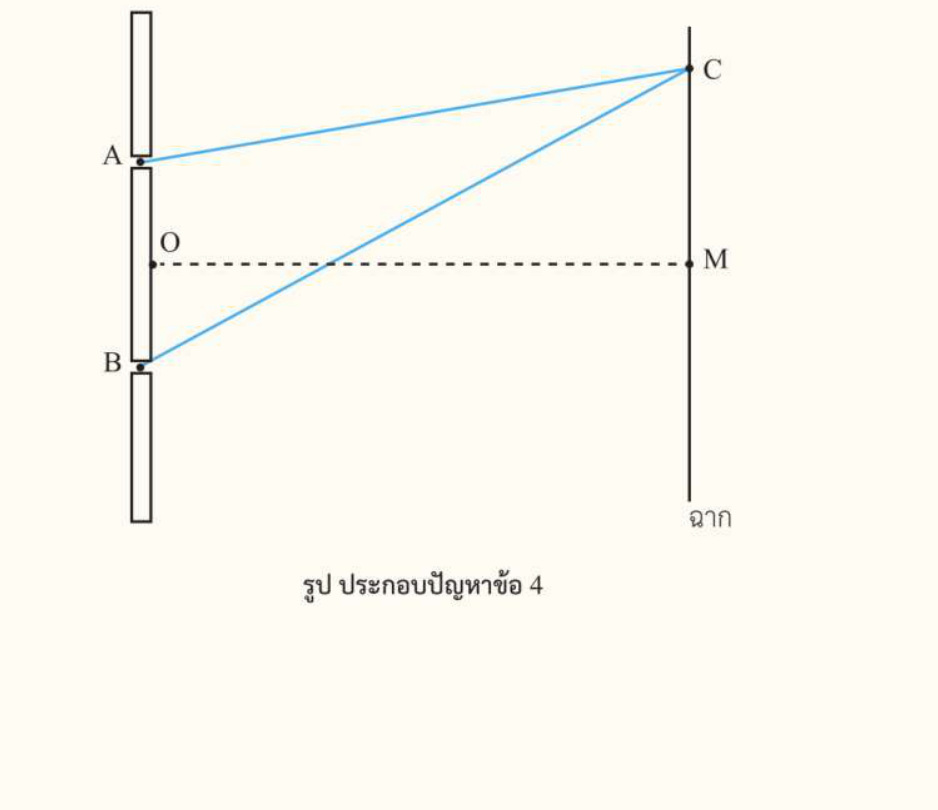
3 จากทางเดินสู่มุมและตำแหน่งบนฉาก
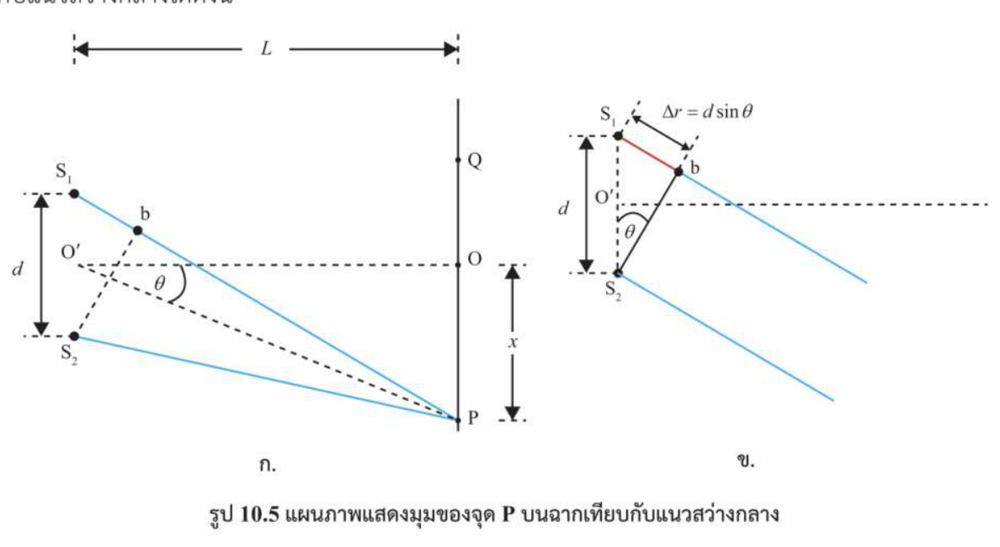
ความหมายของตัวแปรและมุม
สมการหาตำแหน่งในรูปมุม
เมื่อฉากอยู่ไกลจากสลิตมากเมื่อเทียบกับ d ใช้ \(\Delta r\approx d\sin\theta\)
สว่าง: \(d\sin\theta=n\lambda\) (n = 0, 1, 2, …)
มืด: \(d\sin\theta=(n-\tfrac12)\lambda\) (n = 1, 2, 3, …)
กรณีมุมเล็ก: ใช้ระยะบนฉาก
ถ้ามุมเล็ก ใช้ \(\sin\theta\approx\tan\theta=x/L\) หนังสือใช้เกณฑ์ประมาณ \(\theta<10^\circ\)
สว่าง: \(x_n\approx n\lambda L/d\)
มืด: \(x_n\approx(n-\tfrac12)\lambda L/d\)
ใช้เมื่อ L มากกว่า d มาก และ x น้อยกว่า L มาก; ถ้ามุมไม่เล็ก ให้ใช้รูป sin แทนการแทน x/L
คำถาม 11
มุม θ วัดจากเส้นใดถึงเส้นใดในภาพ และ x วัดบนฉากจากจุดใด?
คำถาม 12
โจทย์ให้มุม 20° ควรเริ่มจากสมการรูป sinθ หรือแทนด้วย x/L ทันที?
คำถาม 13
ระยะจากแถบสว่างกลางถึงแถบสว่างอันดับ 3 ต่างจากระยะระหว่างแถบสว่างติดกันอย่างไร?
ตัวอย่าง 3
แสงความยาวคลื่น 556 nm ผ่านสลิตคู่ห่างกัน 18 µm พิจารณาชนิดและอันดับแถบที่มุมต่อไปนี้ตามการประมาณในหนังสือ
ตัวอย่าง 3 · ก
ก. θ = 7.0°
ตัวอย่าง 3 · ข
ข. θ = 8.0°
ตัวอย่าง 4
จุดบนฉากห่างจากแนวกลาง 1.35 cm ใช้แสง 540 nm สลิตคู่ห่างกัน 0.10 mm และฉากห่าง 1.0 m จงระบุชนิดและอันดับแถบ
ตัวอย่าง 4
แปลงหน่วย ตรวจมุมเล็ก แล้วหาผลต่างทางเดินเทียบกับความยาวคลื่น
4 การคำนวณตำแหน่งและระยะห่างแถบ
ระยะห่างระหว่างแถบที่ติดกัน
ข้อถัดไปใช้สลิตคู่และแสงที่เริ่มเฟสตรงกัน แสดงการแปลงหน่วยและสมการที่เลือกในพื้นที่ของแต่ละข้อ
คำถาม 14
ใช้แสง 600 nm, d = 0.20 mm, L = 1.0 m หาระยะจากแนวกลางถึงแถบสว่างอันดับ 3
คำถาม 15
จากชุดอุปกรณ์เดียวกับข้อก่อน หาตำแหน่งแถบมืดอันดับ 2 วัดจากแนวกลาง
คำถาม 16
ศูนย์กลางแถบสว่าง 6 แถบเรียงติดกัน แถบแรกถึงแถบที่ 6 ห่าง 15 mm ระยะห่างแถบสว่างติดกันเป็นเท่าใด?
คำถาม 17
สลิตห่างกัน 0.20 mm ฉากห่าง 1.0 m แถบสว่างติดกันห่าง 2.5 mm จงหาความยาวคลื่นเป็น nm
5 ใช้สมการอธิบายการเปลี่ยนแปลง
ความสัมพันธ์ของตัวแปร
คำถาม 18
ใช้ d และ L เดิม เปลี่ยนจากแสง 450 nm เป็น 600 nm ระยะห่างแถบเปลี่ยนเป็นกี่เท่า?
คำถาม 19
ใช้แสงเดิม เพิ่ม L เป็น 2 เท่า และเพิ่ม d เป็น 2 เท่าพร้อมกัน ระยะห่างแถบเปลี่ยนอย่างไร?
คำถาม 20
ใช้สีแสง d และ L เดิม แต่ทำให้แหล่งกำเนิดสว่างขึ้น ระยะห่างแถบเปลี่ยนหรือไม่?
โจทย์ สสวท. ใช้ S เป็นสลิตเดี่ยวหน้าแผ่นสลิตคู่ M,N โดยแนวแบ่งครึ่งผ่าน G และกำหนด \(NK-MK=\lambda/2\); ระยะ D ในภาพคือระยะสลิตคู่ถึงฉาก
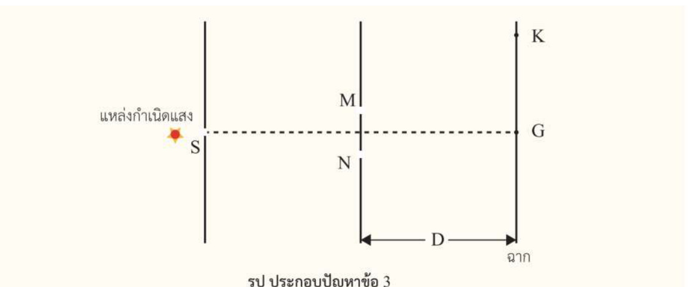
ตรวจความเข้าใจ 10.2 · ข้อ 3 ก
ก. ที่ตำแหน่ง G และ K เป็นแถบอย่างไร?
ตรวจความเข้าใจ 10.2 · ข้อ 3 ข
ข. ถ้าต้องการให้แถบสว่างอยู่ใกล้กันมากขึ้น ปรับตัวแปรใดได้บ้าง? ระบุสิ่งที่คงที่ในแต่ละกรณี
ภาพจริงอาจมีแถบกลางสว่างกว่าแถบด้านข้าง เพราะช่องจริงมีความกว้าง การคำนวณตำแหน่งแถบในหัวข้อนี้ใช้แบบจำลองสลิตคู่ ส่วนรายละเอียดการเลี้ยวเบนของสลิตเดี่ยวเรียนต่อใน 10.3
6 แบบฝึกหัด 10.2
ใช้ภาพประกอบเพื่อระบุระยะที่โจทย์ถาม และแสดงสมการพร้อมการแปลงหน่วย
แบบฝึกหัด 10.2 · ข้อ 1
แสงความยาวคลื่น \(5.9\times10^{-7}\) m ตกกระทบตั้งฉากกับสลิตคู่ที่ห่างกัน \(1.0\times10^{-3}\) m ฉากห่าง 1.0 m จงหาระยะจากแถบสว่างกลางถึงแถบสว่างแรก ตามรูป
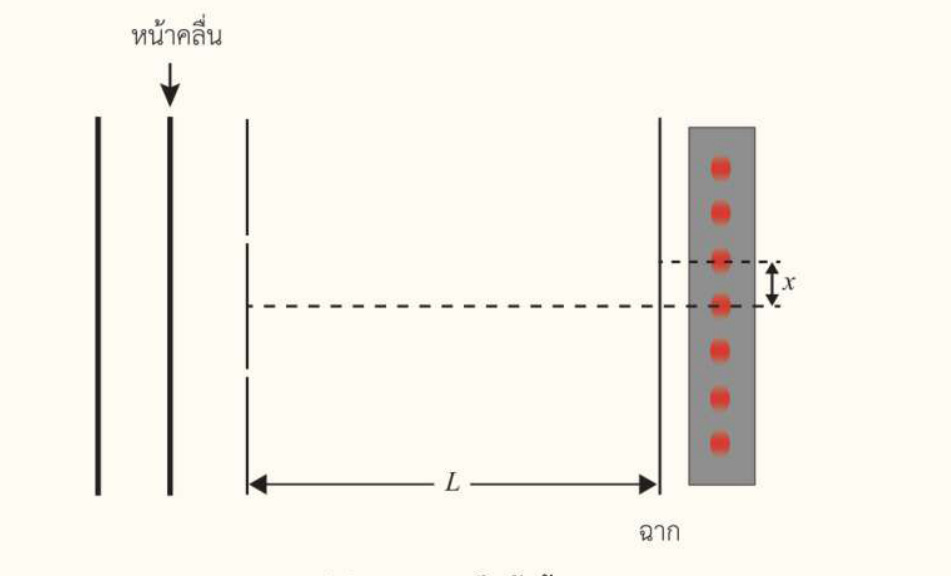
ข้อ 2: ใช้แสง \(6.0\times10^{-7}\) m สลิตคู่ห่าง \(2.0\times10^{-5}\) m ฉากห่าง 2.0 m โดย x ในรูปคือระยะระหว่างแถบสว่างที่ติดกัน
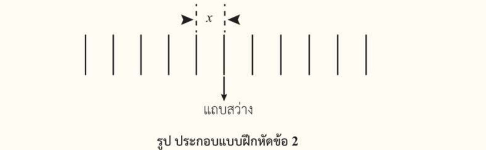
แบบฝึกหัด 10.2 · ข้อ 2 ก
ก. จงหาระยะ x
แบบฝึกหัด 10.2 · ข้อ 2 ข
ข. ถ้าเลื่อนฉากให้ไกลขึ้น โดยใช้แสงและแผ่นสลิตเดิม x จะเปลี่ยนอย่างไร?
แบบฝึกหัด 10.2 · ข้อ 2 ค
ค. ถ้าเพิ่มความสว่างของแหล่งกำเนิด โดยคงสีแสง สลิต และระยะฉาก x จะเปลี่ยนหรือไม่?
แบบฝึกหัด 10.2 · ข้อ 3
ภาพแถบแสงและไม้บรรทัดด้านล่าง: ความกว้างของแถบสว่างกลางมีค่าประมาณเท่าใด? ระบุขอบที่ใช้วัด
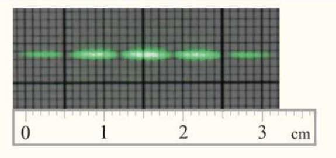
7 โจทย์การแทรกสอดผ่านสลิตคู่
ทุกข้อใช้แสงตกกระทบตั้งฉากและสลิตคู่ที่เริ่มเฟสตรงกัน โจทย์ตำแหน่งบนฉากใช้กรณีมุมเล็ก
คำถาม 21
ใช้แสง 650 nm สลิตห่าง 0.25 mm และฉากห่าง 1.0 m แถบสว่างแรกอยู่ห่างแถบสว่างกลางเท่าใด?
คำถาม 22
อ่านภาพไม้บรรทัด: ระยะห่างแถบสว่างติดกัน x มีค่าประมาณเท่าใด?
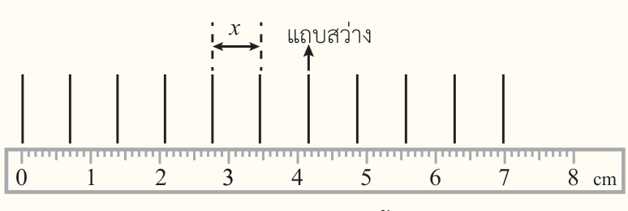
คำถาม 23
สลิตห่าง 0.20 mm ฉากห่าง 1.0 m แถบสว่างอันดับ 4 อยู่ห่างแนวกลาง 1.2 cm จงหาความยาวคลื่นเป็น nm
คำถาม 24
แสง 500 nm ผ่านสลิตคู่ห่าง 0.50 mm ฉากห่าง 2.0 m แถบสว่างติดกันห่างเท่าใดเป็น mm?
คำถาม 25
ใช้แสง 600 nm ฉากห่าง 1.0 m แถบสว่างติดกันห่าง 5.0 mm จงหาระยะห่างสลิตเป็น µm
คำถาม 26
ใช้แสง 500 nm และสลิตห่าง 10 µm จงหามุมของแถบสว่างอันดับ 2 จากแนวกลาง โดยใช้สมการที่มี sin θ
คำถาม 27
จากแสงและสลิตในข้อ 26 จงหามุมของแถบมืดอันดับ 1 จากแนวกลาง
คำถาม 28
ใช้แสง 600 nm สลิตห่าง 0.30 mm ฉากห่าง 2.0 m จงหาระยะจากแถบสว่างอันดับ 2 ทางซ้าย ถึงแถบมืดอันดับ 3 ทางขวา
คำถาม 29
ศูนย์กลางแถบสว่าง 7 แถบที่ติดกัน แถบแรกถึงแถบที่ 7 ห่าง 18 mm ถ้าสลิตห่าง 0.20 mm และฉากห่าง 1.0 m จงหาความยาวคลื่น
คำถาม 30
ต้องการให้แถบสว่างติดกันห่าง 4.0 mm เมื่อใช้แสง 500 nm และสลิตห่าง 0.25 mm ควรวางฉากห่างสลิตเท่าใด?
Physics • Book 3 • Chapter 10 Wave optics
10.2 Light interference through a double slit
Observe the patterns, complete the notes, and progress from path difference to fringe positions.
Each question has its own answer area. Use the supplied figures and reveal solutions to review the reasoning.
0 Meet single and double slits
Start with the apparatus and the lengths marked on a diagram. Then investigate the light beyond the openings.
What is a slit?
Opening width versus slit separation
Which wave properties are involved?
Question 1
A plate has several selectable openings. What determines whether a single slit or double slit is being used?
Question 2
What are the endpoints of the measurements \(a\) and \(d\) in the diagram?
Question 3
What must happen to the light after the two narrow openings for the waves to overlap?
1 Experiment and read the fringe patterns
A laser illuminates one selected slit pair and the light falls on a screen. Do not look into the beam; the apparatus is teacher supervised.
Keep the screen distance unchanged. Compare green light for two slit separations, then compare green and red light at the same slit separation.
Question 4
Compare A and B. What changes, what is held constant, and how does the pattern change?
Question 5
Compare B and C. Which colour gives larger fringe spacing? What must be kept unchanged?
Question 6
Between which points should the width of one bright fringe be measured?
Experimental conclusion
Understanding check 10.2 · Q1
Which idea about light is supported by Thomas Young’s interference experiment?
2 Path difference, phase and fringe order
Coherent sources and the assumed initial phase
Optical path difference
Question 7
The two paths to P are \(12\lambda\) and \(10\lambda\). What is their path difference?
Relating path difference to phase
Travelling one wavelength \(\lambda\) changes the phase by one cycle, or \(2\pi\) rad.
A path difference \(\Delta r\) therefore corresponds to \(\dfrac{\Delta r}{\lambda}\) cycles.
\[\frac{\Delta\phi}{2\pi}=\frac{\Delta r}{\lambda}\quad\Rightarrow\quad\boxed{\Delta\phi=\frac{2\pi\Delta r}{\lambda}}\]This is the phase difference due to the path difference. For slits initially in phase, it is the phase difference at the observation point.
If \(\Delta r=m\lambda\), then \(\Delta\phi=2m\pi\) rad. For integer \(m\), the waves are in phase again.
Example 1
Two coherent sources start in phase with wavelength 600 nm. Find the phase difference at P in each case.
Example 1 · (a)
(a) \(S_1P=65.00\) cm and \(S_2P=65.60\) cm
Example 1 · (b)
(b) \(S_1P=120\lambda\) and \(S_2P=125.5\lambda\)
Understanding check 10.2 · Q2
Given \(S_1P=125\lambda\) and \(S_2P=120\lambda\), find the phase difference at P.
Conditions for bright and dark fringes
Bright: \(\Delta r=n\lambda\), n = 0, 1, 2, … . The waves arrive in phase and interfere constructively.
Dark: \(\Delta r=(n-\tfrac12)\lambda\), n = 1, 2, 3, … . Opposite phases interfere destructively; equal amplitudes give complete cancellation.
How is fringe order counted?
Question 8
What type and order of fringe occurs at a point equidistant from the two slits?
Question 9
If \(\Delta r=1.5\lambda\), what fringe type and order occur?
Question 10
If \(\Delta r=1.2\lambda\), is the point exactly a bright maximum or a completely dark minimum?
Example 2
Two coherent sources start in phase at wavelength 550 nm. Identify the fringe type and order from the path difference.
Example 2 · (a)
(a) Path difference 1100 nm
Example 2 · (b)
(b) Path difference 825 nm
Understanding check 10.2 · Q4
AB is a double slit at normal incidence. If \(AC=n\lambda\) and \(BC=(n+3)\lambda\), with integer n and OM the central axis, identify the fringe at C.
3 From path difference to screen angle and position
Meaning of the geometry variables
Angular fringe conditions
For a screen far from the slits compared with d, \(\Delta r\approx d\sin\theta\).
Bright: \(d\sin\theta=n\lambda\), n = 0, 1, 2, … .
Dark: \(d\sin\theta=(n-\tfrac12)\lambda\), n = 1, 2, 3, … .
Small-angle screen-position formulas
At small angle, \(\sin\theta\approx\tan\theta=x/L\); the book uses roughly \(\theta<10^\circ\).
Bright: \(x_n\approx n\lambda L/d\).
Dark: \(x_n\approx(n-\tfrac12)\lambda L/d\).
Require L much greater than d and x much smaller than L. Use the sine form when the angle is not small.
Question 11
Between which two lines is θ measured, and where does x start on the screen?
Question 12
A question gives an angle of 20°. Should you use the sine form or immediately replace it by x/L?
Question 13
How does the distance to the third bright fringe differ from the spacing of adjacent bright fringes?
Example 3
Light of wavelength 556 nm passes through slits separated by 18 µm. Interpret each angle using the precision and approximation of the textbook example.
Example 3 · (a)
(a) θ = 7.0°
Example 3 · (b)
(b) θ = 8.0°
Example 4
A screen point is 1.35 cm from the centre. The wavelength is 540 nm, slit separation 0.10 mm, and screen distance 1.0 m. Identify the fringe type and order.
Example 4
Convert units, check the small angle, then find the path difference in wavelengths.
4 Calculating fringe positions and spacing
Spacing between adjacent fringes
The following questions assume an in-phase double slit. Show unit conversions and the selected equation in each answer area.
Question 14
For 600 nm light, d = 0.20 mm and L = 1.0 m, find the distance from the centre to the third bright fringe.
Question 15
Using the same arrangement, find the distance from the centre to the second dark fringe.
Question 16
Six consecutive bright-fringe centres span 15 mm from the first to the sixth. What is the adjacent-fringe spacing?
Question 17
The slit separation is 0.20 mm, screen distance 1.0 m and fringe spacing 2.5 mm. Find the wavelength in nm.
5 Use the equations to explain changes
Relationships between variables
Question 18
With d and L unchanged, replace 450 nm light with 600 nm light. By what factor does fringe spacing change?
Question 19
With the same wavelength, double both L and d. What happens to fringe spacing?
Question 20
Keep wavelength, d and L unchanged but increase source brightness. Does the fringe spacing change?
In the IPST diagram, S precedes the double slit M,N, the bisector reaches G, and \(NK-MK=\lambda/2\). D is the double-slit-to-screen distance.
Understanding check 10.2 · Q3(a)
(a) What fringes occur at G and K?
Understanding check 10.2 · Q3(b)
(b) How can the bright fringes be brought closer together? State what is kept fixed for each change.
Real fringes may be brightest near the centre because each opening has finite width. This section models double-slit fringe positions; the single-slit diffraction detail follows in 10.3.
6 Exercise 10.2
Use the supplied diagrams to identify the requested distances. Show the equations and unit conversions.
Exercise 10.2 · Q1
Light of wavelength \(5.9\times10^{-7}\) m is normally incident on slits separated by \(1.0\times10^{-3}\) m. The screen is 1.0 m away. Find the distance from the central maximum to the first bright fringe shown.
Q2: wavelength \(6.0\times10^{-7}\) m, slit separation \(2.0\times10^{-5}\) m, and screen distance 2.0 m. In the diagram, x is the spacing between adjacent bright fringes.
Exercise 10.2 · Q2(a)
(a) Find x.
Exercise 10.2 · Q2(b)
(b) Move the screen farther away, keeping the same light and slits. How does x change?
Exercise 10.2 · Q2(c)
(c) Increase source brightness while keeping wavelength, slits and screen distance fixed. Does x change?
Exercise 10.2 · Q3
Using the fringe photograph and ruler below, estimate the width of the central bright fringe. State the two boundaries used.
7 Double-slit interference problems
All questions assume normal incidence and initially in-phase double slits. Screen-position calculations use small angles.
Question 21
For 650 nm light, slit separation 0.25 mm and screen distance 1.0 m, how far is the first bright fringe from the central maximum?
Question 22
Read the ruler diagram. Estimate x, the spacing between adjacent bright fringes.
Question 23
Slit separation is 0.20 mm and screen distance 1.0 m. The fourth bright fringe is 1.2 cm from the centre. Find the wavelength in nm.
Question 24
For 500 nm light, slit separation 0.50 mm and screen distance 2.0 m, find the adjacent bright-fringe spacing in mm.
Question 25
For 600 nm light, screen distance 1.0 m and adjacent-fringe spacing 5.0 mm, find the slit separation in µm.
Question 26
For 500 nm light and slit separation 10 µm, find the angle of the second bright fringe from the centre using the sine equation.
Question 27
Using the light and slits in Q26, find the angle of the first dark fringe from the centre.
Question 28
For 600 nm light, slit separation 0.30 mm and screen distance 2.0 m, find the distance from the second bright fringe on the left to the third dark fringe on the right.
Question 29
Seven consecutive bright-fringe centres span 18 mm from the first to the seventh. Slit separation is 0.20 mm and screen distance 1.0 m. Find the wavelength.
Question 30
To obtain adjacent bright fringes 4.0 mm apart with 500 nm light and slit separation 0.25 mm, how far should the screen be from the slits?